The KAWA manual BETA
KAWA turns the M-VAVE FM-1 into a pocket tracker made above all for chiptune and IDM: 4-bit waves, pulse and noise like the old consoles, FM, breakbeats cut into slices, rolls, stutter and glitch effects. It can do other styles, but that is what it is built for.
You do not need to know trackers. Start here, follow the five tutorials to make a real song, and come back to the reference when you want to go further. Version 0.6 beta.
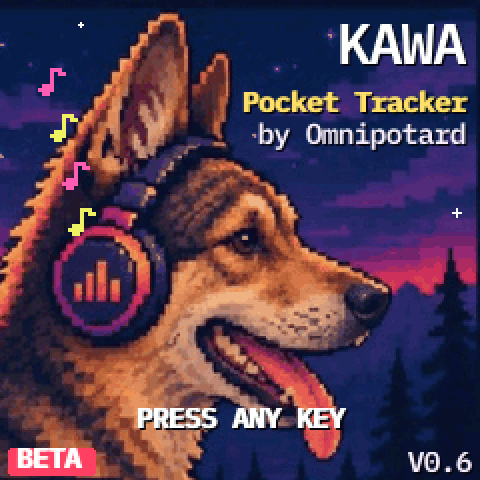
Start here
| 1. Install | Chrome or Edge: plug the FM-1 in and click Install KAWA on the home page. Or use the launcher for your computer (details). |
| 2. Play | Switch the FM-1 on and press any key. Press REC, play the keys, press PLAY to listen. Hold HOME on any page for its help. |
| 3. Save | Press SAVE, choose SAVE AS…, a slot, a name, then OCT+. After that: SAVE, OCT+. |
| 4. Learn | The five tutorials below, or try everything first in the web emulator. |
Beta version: read this first
KAWA 0.6 has not been tried on a real FM-1 yet. It passes every check we can run without the hardware: the simulator, the web emulator, and an install tested against simulated power cuts.
Installing an unofficial firmware is at your own risk, but you can always go back to the official one. Use a stable power supply and never unplug the FM-1 during an install. Projects cannot be moved to a computer yet. If something seems odd, say so: that is what a beta is for.
Words you will meet
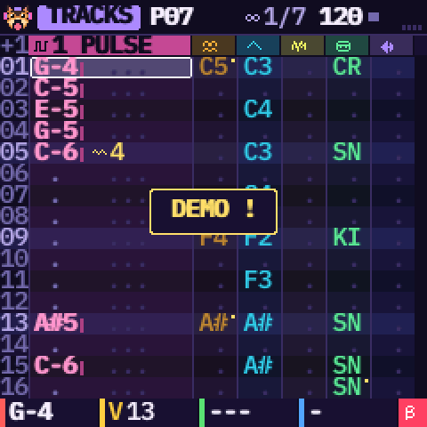
A tracker is a music editor where you write the song as a grid of numbers and notes, from top to bottom, like a scrolling score. No timeline and no mouse: you play a key and the note lands in the grid.
- Step (row): one line of the grid, a sixteenth note. Four rows make a beat.
- Track: one column. KAWA has six, each one a voice that plays one thing at a time.
- Cell: where a row meets a track: a note, its volume and up to two effects.
- Pattern: a short block of rows (1 to 32, 64 when linked in pairs), like a bar or two. You write patterns, not the whole song.
- Chain (the song): the list of patterns in play order, each played N times.
- Engine: the kind of sound a track makes: PULSE, WAVE, NOISE, FM, KIT (drums) or SAMPLE.
- Preset (factory sound): a ready-made sound for an engine. You can change every part of it.
- Cell effect: a trick written in a cell (arpeggio, glide, roll, chance…).
01Install KAWA
You need a USB data cable (not a charge-only one). Switch the FM-1 on, plug it in, and close every other MIDI program (a DAW, M-UPGRADE). Then pick one way:
- From your browser (Chrome, Edge or Opera): open the home page and click Install KAWA.
- With a launcher (needs Python 3): download the project (green Code button, Download ZIP) and unzip it. Windows: double-click
INSTALL-Windows.bat. Mac: double-clickINSTALL-Mac.command(the first time: right click, Open). Linux:./INSTALL-Linux.sh. The package iskawa-0.5.fwsc.
The FM-1 restarts into KAWA: the dog appears and waits for a key.
Is it safe?
- The package is checked before anything is erased, and you are asked to confirm.
- Do not unplug the FM-1 while it writes. If the power is cut anyway, the install resumes at the next power-on; run the installer again.
- The chip's bootloader is never touched. Your projects and samples are kept when you update from 0.2 or later (projects from 0.1 are not read).
- Rescue: if KAWA ever fails to start twice in a row, the FM-1 opens the USB rescue by itself. You can also hold OCT− while you switch on. Then run the installer again.
02Back to the official firmware
If you do not like KAWA, you can reinstall M-VAVE's firmware. Take your time: this step rewrites more of the chip than KAWA does.
- Your KAWA projects will be lost: the official firmware cannot read them.
- Use a stable power supply and a USB data cable, and close any other MIDI software. If KAWA misbehaves, open the USB rescue first (OCT− held while switching on).
- Install the official firmware V15 with M-VAVE's M-UPGRADE. KAWA first checks that the tool is M-VAVE's own and that its package matches your FM-1; otherwise nothing is written and KAWA keeps running.
- Unplug nothing during the transfer. If it stops, plug back in and start again.
03The FM-1 and its controls
One knob, one colour
KNOB 1 is red, KNOB 2 yellow, KNOB 3 green and KNOB 4 blue, on every page. The bottom line of the screen has four boxes in the same colours and says what each knob does there. MASTER is the volume.
The buttons and their pages
Each button opens a page; press it again for the next page of its group (SELECT turns the same pages).
| Button | Page | Press again |
|---|---|---|
| HOME | TRACKS: the tracker | |
| SEQ | GRID: the steps on the white keys, 16 at a time | Back to the tracks |
| EDIT | SOUND: the track's engine and sound | SOUND 2, OPERATOR and OP ENVELOPE (FM) or SAMPLE EDIT (SAMPLE), EFFECT, TABLE; then round again |
| ENV | ENVELOPE: the track's ADSR | MIX: volumes, pans, sends, master effect |
| LFO | LFO: the track's LFO | MODULATION; then back to LFO |
| SCL | SCALE: root, scale, lock | MAGIC: 16 tools on the white keys; then back to the tracks |
| GLO | SONG: tempo, swing, the chain | GROOVE; then OPTIONS |
| SAVE | PROJECTS: the song menu (the button blinks while there are unsaved changes) | Held: the tools |
| FX | SENDS: drive, echo and reverb of each track | LIVE: the 32 live effects; a third tap goes back |
| PLAY REC | Play / stop; record | |
| OCT− OCT+ | The keyboard's octave | On GRID: the pattern's size. On SONG: remove / copy an entry. On LIVE: the bank. On menus: back / OK |
| ARP | The clear / shift key: see Shortcuts |
The three encoders
| Encoder | What it does |
|---|---|
| SELECT | Turns the pages of EDIT, LFO, ENV, FX and GLO. Elsewhere: the row (TRACKS), the page of 16 steps (GRID), the menu (PROJECTS). |
| ALGORITHM | The track (on MIX, up to the master). On SONG: the entry of the chain. On GROOVE: the step. On OPTIONS: the metronome. |
| PRESETS | On the first SOUND page: the factory sound. On the other EDIT pages: the page's cursor (operator, table row, slice). On SONG: the pattern of the entry. On OPTIONS: the metronome volume. On TRACKS, GRID, MAGIC, SCALE, SENDS and LIVE: the pattern. On ENV, MIX, GROOVE and PROJECTS: nothing. |
The keys
The 27 keys (16 white, 11 black) play the track under the cursor, and write it when REC is on. On some pages they do something else:
| Page | White keys | Black keys |
|---|---|---|
| GRID | The 16 steps of the page: on / off | The track |
| MAGIC | The 16 tools | The track |
| LIVE | The live effects of the bank | Mute the tracks |
| MIX | Play the track | Mute the track; ARP held: solo |
| SONG | The pattern of the entry (or a new entry, on the “+”) | |
| GROOVE | The step | |
| PROJECTS | The slot |
On a KIT or a sliced SAMPLE track, the black keys are sounds too: each plays the drum or the slice next to it, an octave higher. They are written in the cell like any note (a + after the name).
04First steps
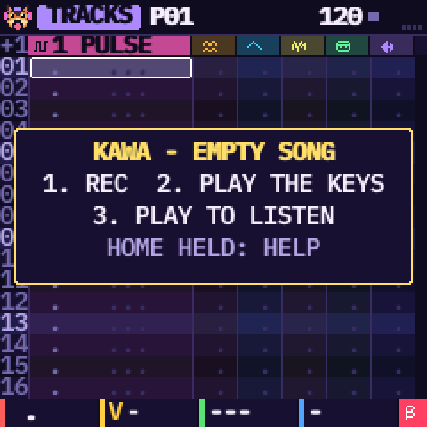
The first startAt power-on the dog stays until you press any button, key or knob (that first touch does nothing else). With nothing saved, KAWA opens an empty song, with a box that gives the first steps. It goes away at the first note. If you saved before, your last work comes back.
- The tracks
To see a song that is already written, press SAVE, go down to DEMO with SELECT and press OCT+. Each column is a track, with its own colour. The track under the cursor is shown wide: the note, its volume as a small bar, and the cell's effect.
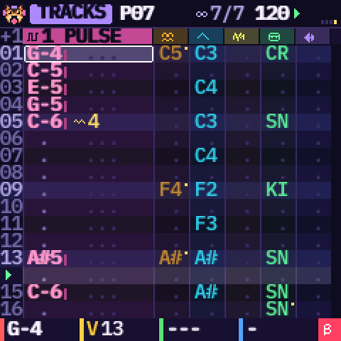
PlayPress PLAY: the row that plays lights up. At the top right you see the position in the chain, the tempo and the beat. PLAY again stops.
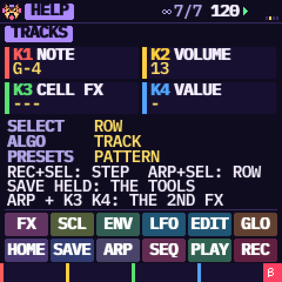
Help, everywhereHold HOME on any page: KAWA shows what the knobs and encoders do there. Let go to come back.
05Tutorial 1 · A new song
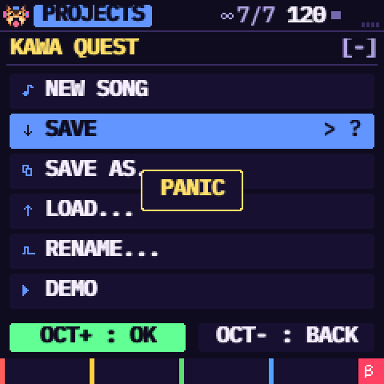
Open the projects menuPress SAVE once. At the top: the song's name, its slot in brackets, and a star if it has changed since the last save. SELECT moves, OCT+ confirms, OCT− goes back.
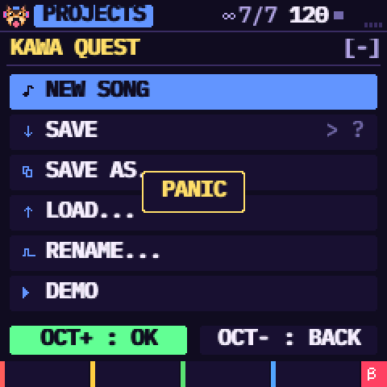
New songGo up to NEW SONG and press OCT+. If the current song is not saved, KAWA asks first.
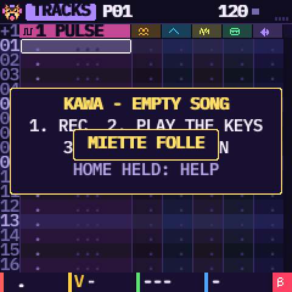
A brand-new songIt gets a random name (you will change it when you save) and 100 BPM. Its six tracks already have a sound each: a pulse lead, FM, a wave bass, noise hi-hats, a kit and a break.
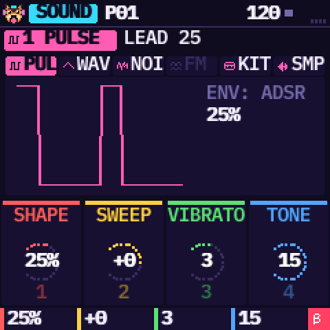
Choose a track's soundALGORITHM picks the track, then EDIT opens its SOUND page. The strip at the top shows the six engines. The four knobs shape the sound; EDIT again goes to the next page.
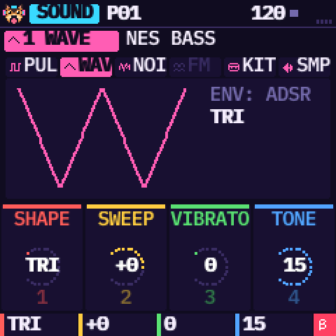
Change the engineOn this first page, hold ARP and turn PRESETS: the track goes to the next or previous engine, with its first factory sound. FM is greyed out if another track already uses it: only one track can be FM.
- A factory sound
Turn PRESETS to try the factory sounds, and play the keys to hear them. A sound you did not touch changes at once. As soon as you turn one of its knobs, a star appears after its name: you have edited it.
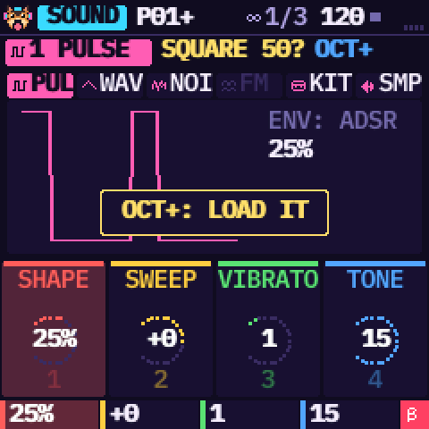
An edited sound is protectedOn a sound with a star, PRESETS does not replace it: it only shows the next factory sound in gold, with “OCT+: LOAD IT”. Your sound still plays. Keep turning to browse.
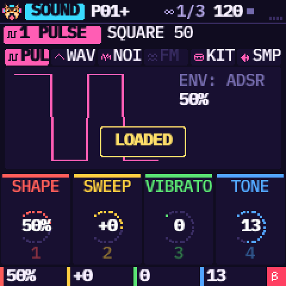
OCT+ loads itOCT+ loads the sound shown (“LOADED”). OCT− keeps yours (“KEPT”), and so does turning a knob, changing track or page, or waiting 8 seconds.
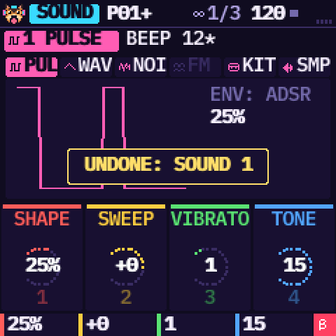
Changed your mind? UndoHold SAVE and press OCT−: “UNDONE: SOUND 1”, and BEEP 12 is back as you had made it. More in Tools, undo and redo.
06Tutorial 2 · Write a pattern
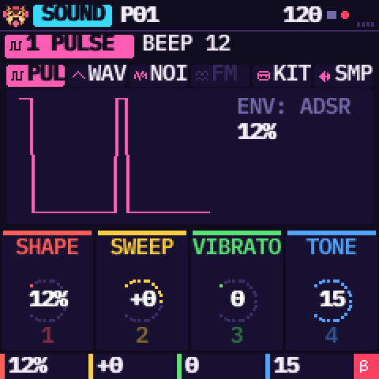
Record notesGo back to the tracks with HOME, press REC (the cursor turns red), then play notes. Each note is written at the cursor's row and the cursor moves down. If you play while the song runs, notes land on the beat. When the scale is locked (SCALE page), the keys stay in the scale.
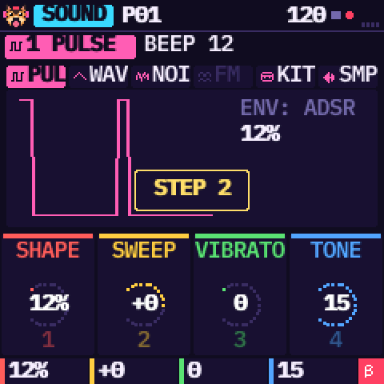
The cursor stepHold REC and turn SELECT: you set how many rows the cursor jumps after each note (0 to 16). With 2 you write eighth notes, with 4 quarter notes.
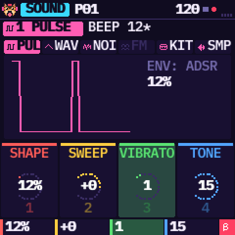
Edit a cellSELECT moves the cursor along the rows, ALGORITHM to another track. K1 changes the note, K2 its volume, K3 the cell's effect and K4 its value (here a minor arpeggio). ARP clears the cell.
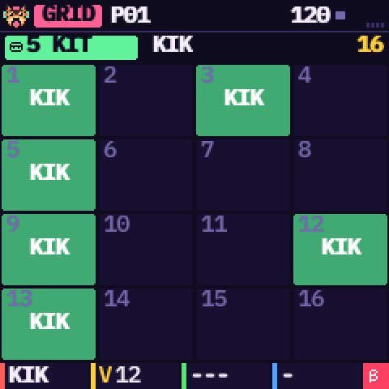
Drums on the gridPick the kit's track with ALGORITHM and press SEQ. The 16 white keys are the 16 steps, as on a Pocket Operator: press a key to place the sound, again to remove it. K1 picks which drum is placed. Hold a step to edit it with the knobs; hold it and press ARP to clear it. The black keys change the track.
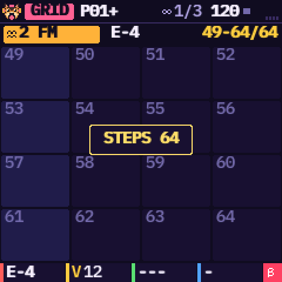
16, 32 or 64 stepsOn the grid, OCT+ makes the pattern 32 steps, then 64; OCT− takes it back. The grid shows 16 steps at a time and SELECT turns its pages (the yellow header says “49-64/64”).
A 64-step pattern is this pattern linked to the next one: they play as one, and the top bar shows “P01+” and “+P02”. Going back to 32 unlinks them and nothing is lost. KAWA refuses on the last pattern (“LAST PATTERN”) or when a neighbour is already linked. One undo takes a link back. The SONG page's K4 sets any length from 1 to 32 rows.
07Tutorial 3 · More patterns
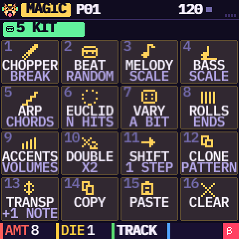
MagicPress SCL twice: SCALE first, then the 16 magic tools, one per white key. K1 sets their amount, K2 the die (the random seed), K3 the scope: the track alone or the whole pattern.
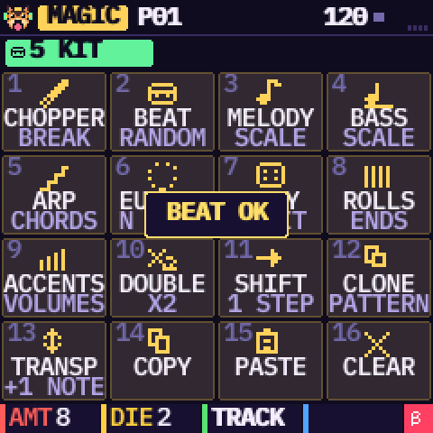
A beat in one keyKey 2, BEAT, writes a rhythm on the track. Press it again for another one. Every tool can be undone (SAVE held + OCT−).
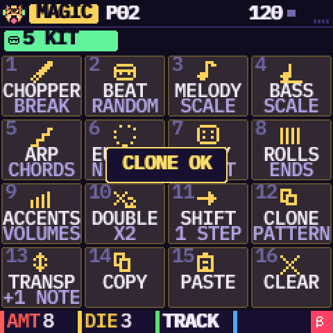
Clone the patternKey 12, CLONE, copies the pattern into the next empty one, adds it to the chain and takes you there: the fastest way to make a variation.
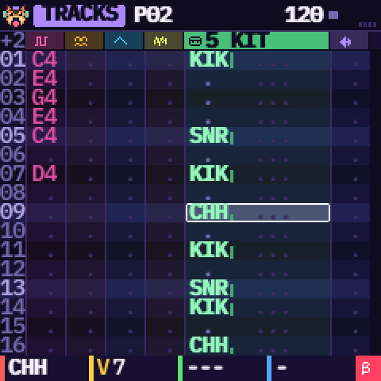
Change patternYou are on P02 now: change it without touching P01. PRESETS moves between patterns (there are 32). While the song plays, the screen stays on the pattern you edit and shows “>P01” for the one that plays.
08Tutorial 4 · Chain patterns into a song
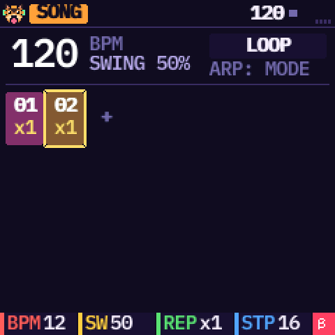
The chainGLO opens SONG: the patterns in song order, each with its number of plays. ALGORITHM picks an entry, PRESETS changes its pattern.
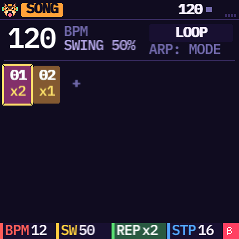
Repeat a patternK3 sets how many times the entry plays: ×1 to ×16.
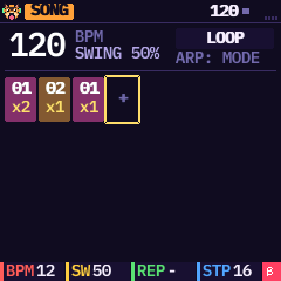
Add entriesGo to the “+” at the end with ALGORITHM and press a white key: key 1 adds pattern 1, key 2 pattern 2… OCT+ copies the entry under the cursor right after it, OCT− removes it.
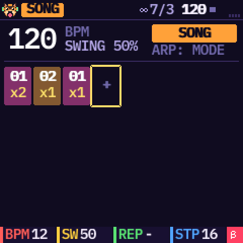
Loop or songARP switches between LOOP (the pattern on screen repeats, handy to compose) and SONG (the whole chain). K1 sets the tempo, K2 the swing (a late off-beat), K4 the pattern's length.
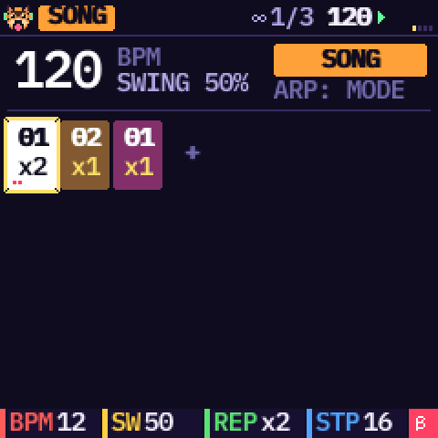
Listen to the songOn the first entry, press PLAY. The entry that plays lights up, and dots count its repeats. At the end the song starts again.
09Tutorial 5 · Save
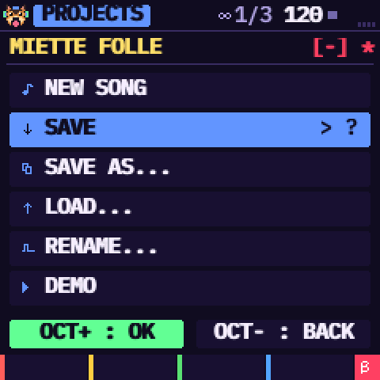
Open the menuPress SAVE, then pick SAVE AS… with SELECT and press OCT+.
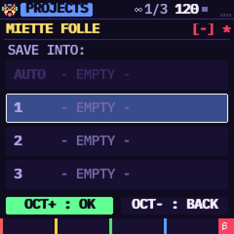
Choose a slotThere are three slots, 1 to 3 (AUTO is filled by KAWA itself). SELECT or a white key picks one; if it is taken, KAWA asks before writing over it.
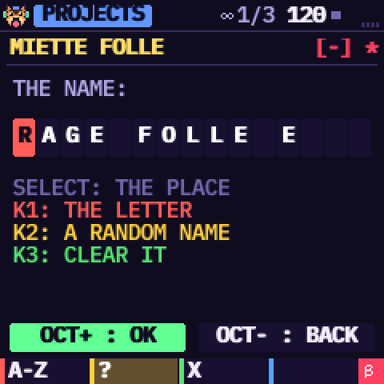
Give it a nameSELECT picks the letter, K1 changes it, K2 picks a random name, K3 clears it all. OCT+ saves.
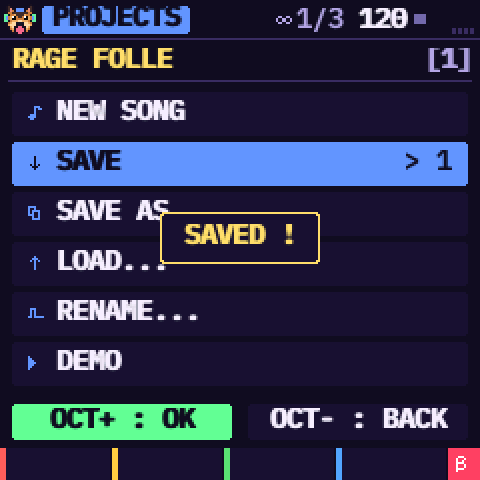
Next time, two pressesThe song keeps its slot: SAVE then OCT+ saves it again. LOAD… opens a song, RENAME… renames it. The SAVE button blinks while there are unsaved changes. KAWA also saves by itself into AUTO when you are not playing, so your last work comes back after a power-off.
10The sound
The six engines
| Engine | The sound | Its settings |
|---|---|---|
| PULSE | NES-style pulse: 12, 25, 50, 75% or PWM | shape, pitch sweep, vibrato, tone, crush, detune (supersaw), arp speed, glide |
| WAVE | Game Boy-style 4-bit waves: triangle, saw, sine, soft, GB, organ, voice, FM | the same as PULSE |
| NOISE | NES-style noise, LONG or METAL, tuned by the note | the same as PULSE |
| FM | 6-operator FM with 32 algorithms (one track at a time) | patch, algorithm, ratio, feedback, brightness, modulator envelope, detune, vibrato; and each operator |
| KIT | 16 drums per kit, 8 kits: ACOUSTIC, HIP HOP, TECHNO, DUB REGGAE, LO-FI, GAME BOY, SNES, PERCUSSION | kit, tune, decay, drive, crush, tone |
| SAMPLE | A break cut in 16 slices, or one of your own sounds, in slices or played on the notes | source, mode, tune, fit to tempo, length, drive, crush, tone |
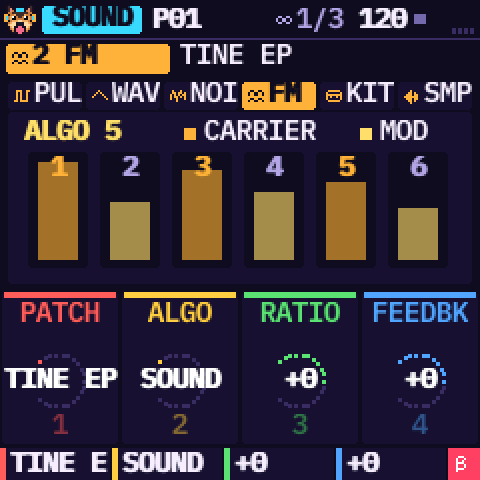
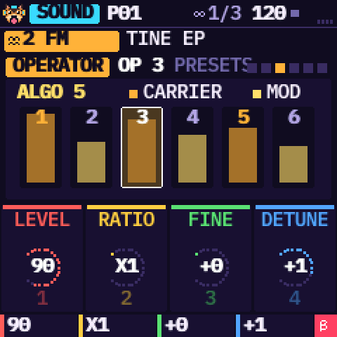
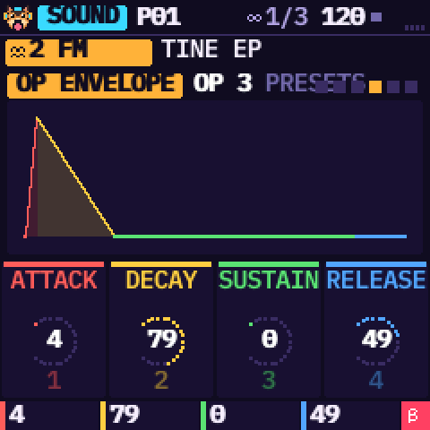
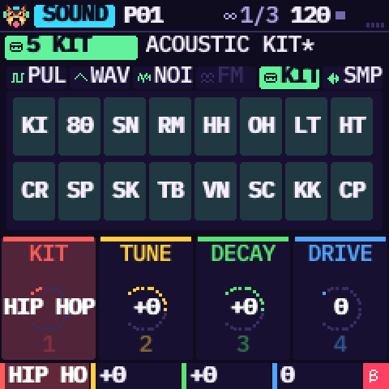
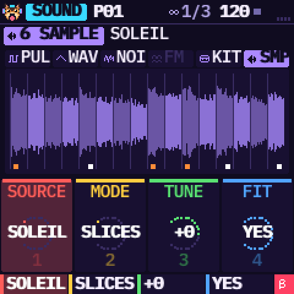
Engine and factory sound
On the first SOUND page, PRESETS browses the factory sounds, grouped by engine, so turning far enough crosses from one engine to the next. ARP held + PRESETS jumps to the next or previous engine. A sound you edited (a star after its name) is never replaced by mistake: PRESETS only shows the next one in gold, OCT+ loads it, OCT− keeps yours (Tutorial 1). A sound loaded by mistake comes back with undo.
The pages of a sound
EDIT goes from page to page: SOUND and SOUND 2 (the engine's settings), for FM OPERATOR and OP ENVELOPE, for SAMPLE SAMPLE EDIT (below), then EFFECT and the track's TABLE (its own section). The small squares at the top right show where you are. The LFO has its own button: LFO opens LFO, again MODULATION.
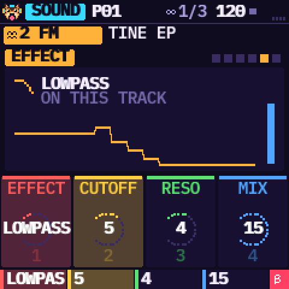
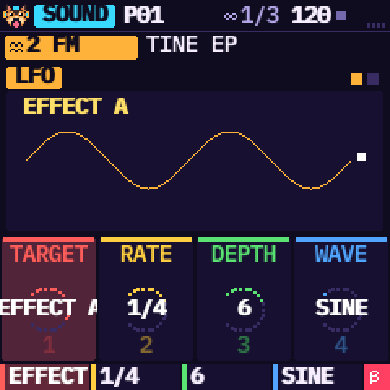
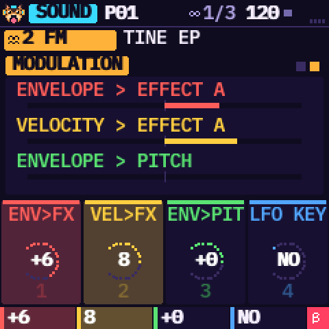
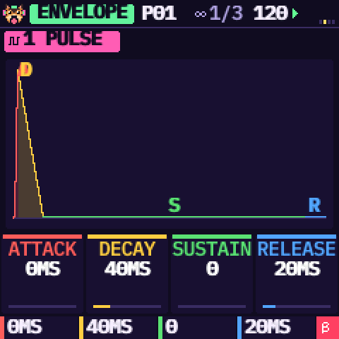
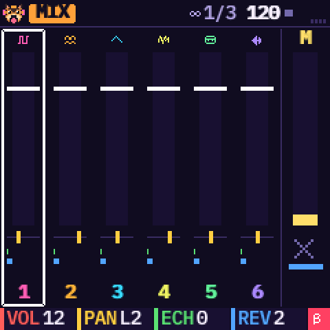
An effect on one track or on everything? A sound's EFFECT page touches only that track. For the whole song, go to MIX and turn ALGORITHM past track 6: column M is the master, and its four knobs set its effect.
11Sends and live effects
The FX button has two pages: a tap opens SENDS, a second tap LIVE, a third goes back (SELECT also switches between them). Held from another page, FX shows LIVE for as long as you hold it. Press a key at the same moment and its effect plays at once.
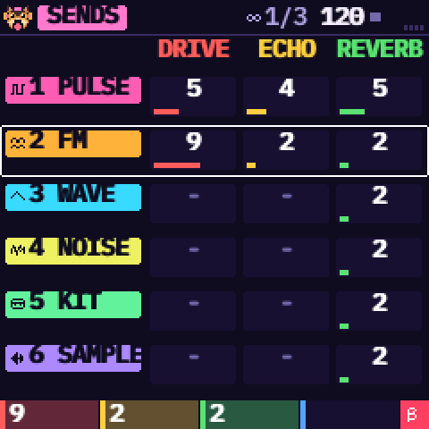
SendsOne row per track, three columns: DRIVE, ECHO and REVERB, from 0 to 15 (0 is off and shows “-”). ALGORITHM picks the track, K1, K2 and K3 set the three. The keys play the track so you hear what you do.
DRIVE is a soft saturation of that track: the louder it is, the more it saturates, and its level is compensated. ECHO and REVERB are the same sends as on MIX.
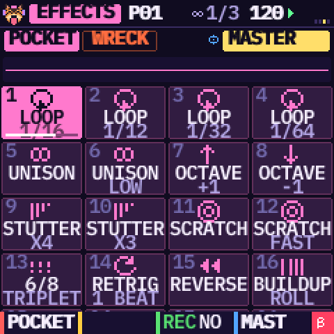
Live: play the keysOn LIVE, press white keys: loops, stutters, scratch, reverse… Let go of the key and the sound comes back. If you got here by holding FX, letting go of FX closes the page. A banner on other pages names the effect that plays. ARP clears the LIVE lane.
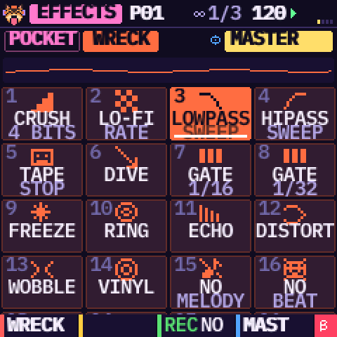
Two banks, one targetOCT+ switches to the WRECK bank: filters, freeze, distort, vinyl… K4 picks the target: the MASTER, or one track (for example, loop only the break). The black keys mute tracks. With REC on and the song playing, the effects you play are recorded in the thin LIVE lane at the right of the tracker.
12Magic
Press SCL twice (SCALE first, then MAGIC; a third press goes back). One tool per white key; the black keys pick the track. K1 sets the amount, K2 the die, K3 the scope: the track alone or the whole pattern.
| Key | Tool | What it does |
|---|---|---|
| 1 | CHOPPER | Chops a break again, keeping a kick on the strong beats and a snare on 2 and 4 |
| 2 | BEAT | A rhythm: simple, broken or gabber, depending on the amount |
| 3, 4 | MELODY, BASS | A melody or a bassline in the scale |
| 5 | ARP | Puts arpeggios that follow the scale on the notes |
| 6 | EUCLID | N hits spread as evenly as possible over the pattern |
| 7, 8 | VARY, ROLLS | Changes the pattern a little; adds rolls at the end of beats |
| 9, 10, 11 | ACCENTS, DOUBLE, SHIFT | Accents; doubles the length; shifts by one row |
| 12 | CLONE | Copies the pattern into a free pattern and adds it to the chain |
| 13 to 16 | TRANSP, COPY, PASTE, CLEAR | Up one note; copy and paste a track or a pattern; clear |
13Cell effects
Each cell has two effects, and both play. The first is chosen with K3 and set with K4; a gold icon shows it in the tracker. Hold ARP and the same two knobs set the second, shown in green. A delayed note can keep its pitch, a vibrato can have its own pan, a roll can be crushed.
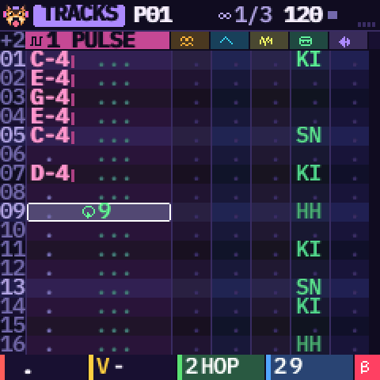
The second columnHere ARP is held: the second effect of the cell is a HOP to row 9, in green; the gold icon after it is the first effect. Let go of ARP to see the first column again. A tap on ARP alone clears the cell.
| Effect | What it does |
|---|---|
| ARP | Arpeggio of a chord (14 chords), at chiptune speed |
| GLI | Glides from the previous note |
| VIB | Vibrato |
| ROL | Roll: the note played again 2 to 32 times within the row (an empty cell replays the last note) |
| BND | Bends the pitch during the note |
| CHN | Chance: the note plays one time in N |
| DLY | Delays the note within the row |
| CUT | Cuts the note within the row |
| REV | Plays a break's slice backwards |
| PIT | Pitch: ±12 semitones for this note |
| SHP | Changes the waveform for this note |
| CRU | Crushes the bits of this note |
| VSL | Volume slide over the row; on an empty cell, the note that is playing |
| PAN | Pan for this note |
| OFS | Starts further into the sample or the slice (in sixteenths) |
| HOP | After this row, the pattern goes on from row N: a loop inside the pattern, a shorter pattern, a jump to a fill (on any track) |
| END | The pattern ends after this row: the song goes on to the next one |
14Tables
A table is a small sequence played inside every note of a track. Its 16 steps come one after the other, every SPEED ticks (a tick is a sixth of a row). Each step can move the pitch, set the volume and play a trick. You write one note in the tracker, and the table plays a chip arpeggio, a drum roll that grows, a kick that drops in pitch, a slice that stutters.
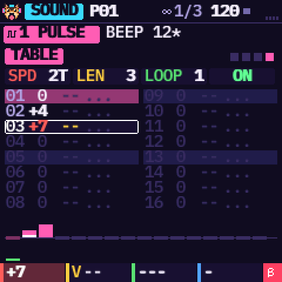
EDIT until TABLEThe table is the last page of EDIT. PRESETS goes down its rows. Row 0 holds its settings: K1 the speed (6 = a row), K2 the length, K3 the step it loops back to after the last one (or none: the last step stays), K4 on or off. On a step (rows 1 to 16): K1 the pitch (±24 semitones; on a KIT, the drum's tuning), K2 the volume (
--leaves it as it is), K3 the trick, K4 its value. ARP clears the step.
| Trick | What it does when its step comes |
|---|---|
| HIT | Plays the note again (the drum, the slice, the synth), at its step's pitch |
| CUT | Stops the note |
| VIB, BND | Vibrato, pitch bend from here (0: no more) |
| SHP, CRU | The waveform; crushed bits |
| VSL, PAN | The volume slides from here (0: it stops); the note's pan |
| HOP | Goes on to step N after this one |
The table starts again with each note and stops with the song. Three to try:
- A chip arpeggio: speed 2, length 3, loop to step 1; steps 0, +4, +7 (or +3 for minor).
- A roll that grows: on a KIT, speed 3, length 4: four HITs with volumes 6, 9, 12, 15, looping to step 4.
- A falling kick: on a WAVE or PULSE, speed 1, steps 0, −2, −4, −6, −8… and no loop.
15The groove
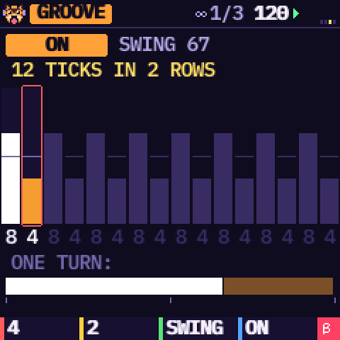
GLO twiceThe groove sets how long each row lasts, in ticks: 6 ticks is a straight sixteenth. Its steps play in turn, one per row: 7 then 5 is a light swing, 8 then 4 a heavy one, 4 4 4 a triplet feel. When it is on, it replaces the swing of the SONG page. ALGORITHM or a white key picks a step, K1 sets its ticks, K2 the length, K3 a preset (it turns the groove on), K4 on or off.
When the ticks add up to 6 a row (7 + 5), the count stays white; otherwise it turns red and the pattern gets shorter or longer. The MIDI clock out sends the groove too, so a drum machine follows it.
16Your own samples
KAWA has four slots for your sounds, MY 1 to MY 4, up to 1.66 s each. They appear as a SOURCE of the SAMPLE engine, next to the breaks.
- The sample importer (samples page, Chrome or Edge) converts your WAV, MP3, OGG or FLAC files (mono, 22 kHz, normalised) and sends them to the FM-1 over USB. KAWA must be stopped (the sound cuts for a moment while it writes). If the transfer is cut, the slot stays empty, never damaged.
- Without a browser:
python3 install/kawa_samples.py put 1 my-sound.wav(andlistto see the slots), from the unzipped project folder. - You can also drop a file in the web emulator to try it first.
- Then, on the SOUND page of a SAMPLE track, set SOURCE to MY 1 to 4 and the MODE: SLICES on the white keys, or NOTES, played on the notes (C4 = the original pitch).
Edit a sample
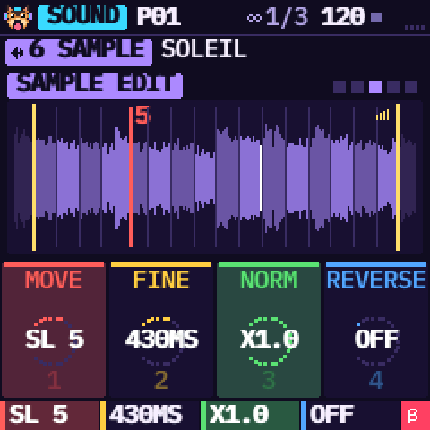
EDIT until SAMPLE EDITOn a SAMPLE track. The sound itself is never rewritten: the edit says how it plays and is kept with the project. PRESETS picks the marker: START, END, then slices 2 to 16 (in SLICES mode). K1 moves it, K2 finely (in milliseconds), and you hear the slice. The other slices stay where they were; ARP spreads them evenly again. K3 NORM brings the loudest point of the edited part to full scale, K4 plays it backwards.
17Tools, undo and redo
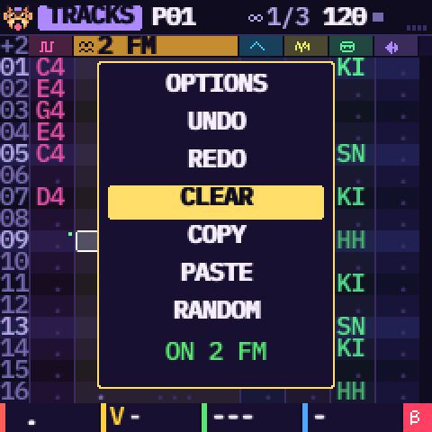
Tools. Hold SAVE for about half a second (a yellow bar fills under TOOLS): OPTIONS, UNDO, REDO, CLEAR, COPY, PASTE and RANDOM open over the page. SELECT picks one and it runs when you let go of SAVE. K3 sets the scope: the current track or the whole pattern (“ON 2 FM” or “ON PATTERN” on the last line). RANDOM writes a melody, bass, beat or break chop that suits the track. While the panel is open, the keys and ARP do nothing.
Undo and redo. The quick way: hold SAVE, then OCT− undoes and OCT+ redoes, at once. Or pick UNDO / REDO in the tools.
Undo covers patterns and sounds: every knob turn on the sound pages, ENVELOPE, MIX and SENDS, and every factory sound loaded. A quick burst of turns is one step. KAWA keeps the last ten steps, patterns and sounds together. On a sound the screen says “UNDONE: SOUND 3” and selects that track. An FM sound cannot come back while another track is FM (“FM: ONE TRACK ONLY”).
18Options
- Theme, language, clock, font
GLO three times, or hold SAVE and let go on OPTIONS. K1 picks the theme (KAWA, GAME BOY, BONBON), K2 the language (English, French, Spanish), K4 the font: SMOOTH (default), BASIC, CLEAR (made for reading) or 8-BIT. K3 sets the MIDI clock over USB:
- OUT: KAWA sends start, stop and the tempo (the groove too), to sync a drum machine or a program on your computer.
- IN: KAWA follows another machine: its START and STOP drive the song and its tempo leads (shown in green). With IN and no clock, PLAY waits for one, and says so.
Settings are kept when you switch off. The CPU line shows how much processing the sound uses; above 70%, KAWA lightens the sound by itself, reverb first, rather than crackle.
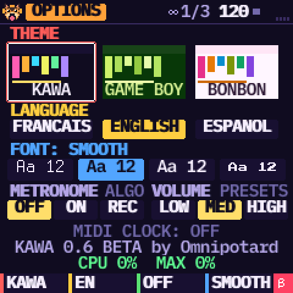
The metronomeOn the same page, ALGORITHM sets the METRONOME: OFF, ON, or REC (it clicks only while REC is on and the song plays). PRESETS sets its VOLUME (LOW, MED, HIGH). It clicks on every beat, higher on the first of a bar. Default: OFF, MED.
The click is also in the USB audio: turn it off when you record the FM-1 into a computer.
19Shortcuts
The yellow bar. Three buttons open a page when you hold them: HOME (HELP), FX (LIVE) and SAVE (TOOLS). A small yellow bar fills at the bottom, with the name of what it opens above it; a short tap shows nothing and does its usual job.
| Gesture | What it does |
|---|---|
| HOME held | The help of the page |
| HOME held + PLAY | Panic: the song stops, every voice and live effect is cut |
| SAVE held | The tools; OCT− / OCT+ held with it: undo / redo |
| SAVE then OCT+ | Save the song again in its slot |
| FX held + a white key | That live effect plays at once, for as long as you hold FX |
| REC held + SELECT | How many rows the cursor jumps after a note |
| OCT− / OCT+ (GRID) | The pattern's size: 16, 32, 64 steps |
| OCT+ / OCT− (SOUND, a sound shown in gold) | Load that factory sound / keep yours |
The ARP button: clear and shift
ARP is not an arpeggiator. It is KAWA's clear / shift key: tap it to clear what is under the cursor, hold it to change what the encoders and keys do. (Arpeggios are the ARP cell effect and the ARP tool of MAGIC.)
| Page | ARP |
|---|---|
| TRACKS | Tap: clears the cell (and the cursor moves on if REC is on). Held + SELECT: inserts or removes a row in the track; held + ALGORITHM: the same in the whole pattern. Held + K3 / K4: the cell's second effect. |
| GRID | A step held + ARP: clears the step. |
| SOUND | Held + PRESETS: the next or previous engine. |
| TABLE | Clears the step. |
| SAMPLE EDIT | Makes the 16 slices even again. |
| SONG | Switches between LOOP and SONG. |
| LIVE | Clears the LIVE lane. |
| MIX | Held + a black key: solo that track. |
In the emulator: Ctrl+Z undo, Ctrl+Y redo, Ctrl+S save, Space PLAY, Enter REC, Shift held FX, the arrow keys for the row and the track.
20Troubleshooting
- I forgot what a knob does: look at the bottom line, or hold HOME.
- The installer does not find the FM-1: use a data cable, switch the FM-1 on, close every other MIDI program; for the browser installer, use Chrome or Edge.
- KAWA stays on the dog: it waits for you; press any key.
- Silence: KAWA starts on an empty song, so write notes (REC, then the keys) or load the demo (SAVE, DEMO, OCT+, PLAY). Also turn up MASTER, check on MIX that no track is muted (a red M), and the note's volume (K2).
- “FM: ONE TRACK ONLY”: another track already has FM; change its engine first.
- A change went wrong: SAVE held + OCT− (undo), for patterns and sounds.
- Notes hang, or everything goes wild: HOME held + PLAY, the panic.
- PRESETS does not change my sound: you edited it (a star after its name), so it only shows the next one in gold; OCT+ loads it.
- SAVE blinks: the song has changes not saved in a slot: SAVE then OCT+.
- The click is in my recording: the metronome is also in the USB audio; turn it off in OPTIONS.
- I cannot find MAGIC or the LFO: MAGIC is SCL pressed twice; LFO and MODULATION are on the LFO button.
- KAWA no longer starts: hold OCT− while you switch on (the USB rescue), then reinstall KAWA or the official firmware.
What's new in 0.6 (and 0.5)
For people coming from 0.4. 0.6 adds to 0.5 the black keys of kit and slice tracks (a sound of their own, an octave up), the demo opening on its last step, and a new song or demo at 120 BPM.
- KAWA starts on an empty song (120 BPM) with a first-steps box; the demo (120 BPM too) is in SAVE, DEMO, and opens on its last step, 7 of 7.
- FX has two pages: SENDS (new: a DRIVE, ECHO and REVERB per track), then LIVE.
- Hold SAVE: the tools (it used to be one undo). SAVE held + OCT− / OCT+ is undo / redo.
- Undo covers sounds as well as patterns (ten steps), and a sound you edited is protected from PRESETS.
- Buttons that moved: LFO and MODULATION are on LFO, MAGIC is SCL twice, the engine is ARP + PRESETS. SELECT turns pages; ALGORITHM moves along the chain and the groove.
- New: 16, 32 or 64 steps, a metronome, HOME + PLAY panic, a blinking SAVE.
- Your songs: those from 0.2 to 0.5 open in 0.6. A 0.6 song also opens in 0.5, 0.4 and 0.3 (the DRIVE send and the 64-step link are ignored there).
21Support KAWA
KAWA is free and open source. If you enjoy what I do, consider supporting me! Every little bit means the world! Buy me a beer, and I'll keep the FM-1 making noise.
Buy me a beer